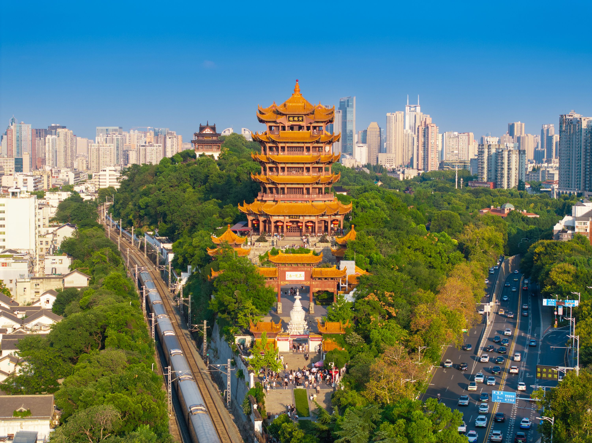

Venue
Wuhan University: Luojia Hill, Wuchang District, Wuhan, Hubei 430072, China
Introduction:
Situated on the scenic Luojia Hill, Wuhan University's International Conference Center is a landmark building renowned for its harmonious blend of traditional Chinese architecture and modern functionality. Established in 1893, Wuhan University is one of China's oldest and most prestigious institutions, consistently ranked among the top 10 universities in the country. The conference center features state-of-the-art facilities, including a 1,200-seat auditorium, multiple seminar rooms, and high-speed internet connectivity.
The center's design reflects Wuhan University's commitment to sustainability, incorporating energy-efficient systems and green spaces. It has hosted numerous international conferences and academic events, providing a premier venue for intellectual exchange and collaboration.
The university's campus is renowned for its natural beauty, with cherry blossoms attracting visitors from around the world each spring. The conference center offers panoramic views of East Lake, the largest urban lake in China, creating a serene backdrop for productive meetings.
ADDR: Luojia Hill, Wuchang District, Wuhan, Hubei 430072, China
Nearby Attractions:
Yellow Crane Tower (黄鹤楼)
A legendary landmark first built in 223 AD, the Yellow Crane Tower is one of China's most famous cultural sites and a symbol of Wuhan. Rebuilt multiple times throughout history, the current structure dates back to 1981 and stands 51.4 meters tall. It offers breathtaking views of the Yangtze River and the Wuhan skyline. The tower is steeped in poetry and legend, with many famous poets including Li Bai and Cui Hao having written about its beauty.
Hubei Provincial Museum
Home to over 260,000 artifacts, the Hubei Provincial Museum is a treasure trove of Chinese history and culture. The museum's most famous exhibit is the Marquis of Zeng Bronze Chime Bells, a 2,400-year-old musical instrument consisting of 65 bells that still produce beautiful melodies today. Other highlights include the Sword of Goujian, a legendary weapon from the Spring and Autumn period that remains razor-sharp after over 2,000 years.
Wuhan Yangtze River Bridge
Completed in 1957, the Wuhan Yangtze River Bridge was the first bridge across the Yangtze River in China. Often referred to as the "First Bridge over the Yangtze," it is an engineering marvel that connects the cities of Wuchang and Hankou. The bridge is 1,670 meters long and features a unique design that combines Chinese and Soviet architectural elements. It is not only a vital transportation link but also a popular tourist attraction.
Map: